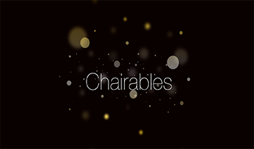
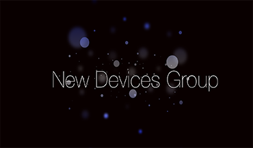
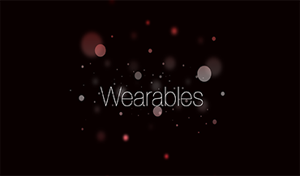

Chairable Computing
Chairable Computing is the topic of my Dissertation work. It describes the application of mobile and wearable computing for people who use wheelchairs. The concept is centered around the design of devices that fit both the frame of the wheelchair and the users' lifestyle.

New Wearable Devices at Intel
I am interning with the UX Research team inside Intel's New Devices Group to design and develop new wearable devices.

Accessible Wearables for Adaptive Sports
A recent project combining chairable computing, wearable technology, and my love of sports. The aim of this project is to highlight the potential for wearable technology to enhance the adaptive sport experience.
{code}+x
Where x can equal any number of things. This is a project I started with a group of talented students I met during the 2015 Google Scholars retreat. It is an outreach project that resulted from the Google Scholars Engage program. More details to follow as we get going.
The Gest-Rest Family
A Gest-Rest is a Chairable input device designed for the power wheelchair armrest. We created 5 prototype input devices that each offer the user a different input style including physical buttons, capacitive touch, and pressure-sensitive touch.